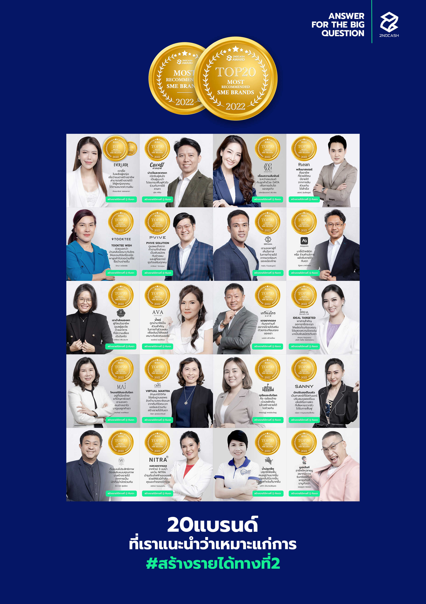
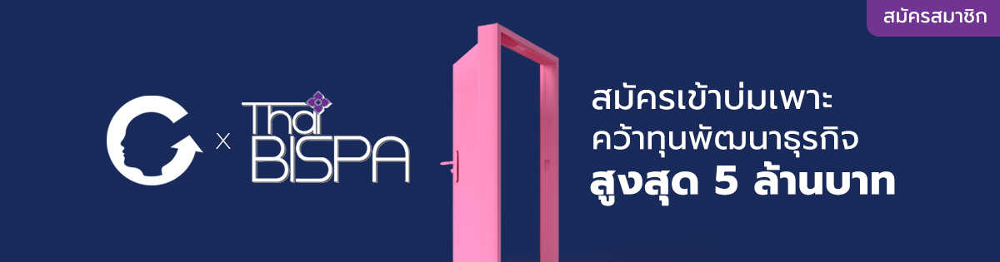
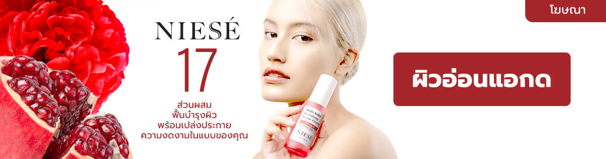
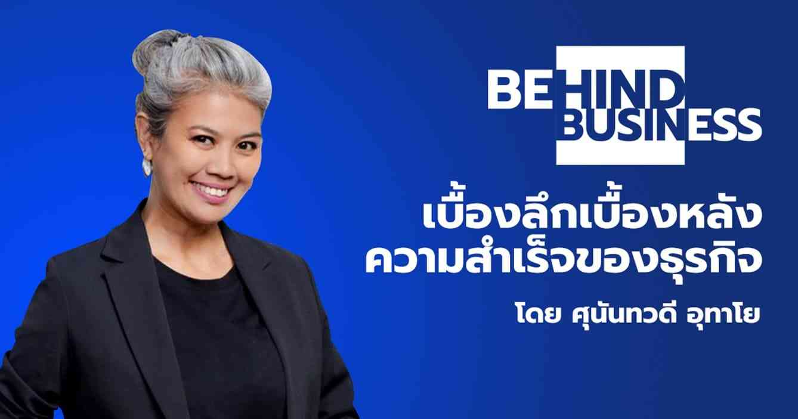

2ndCASH รายได้ทางที่ 2 เบื้องหลังทางรอดของธุรกิจยุคนี้
สำคัญ
- การมีรายได้หลายทางย่อมดีกว่าทางเดียว และการที่จะได้มานั้นต้องตั้งเป้าหมาย วางแผน และ มองหาพันธมิตรที่จริงจังกับเรื่องนี้
- “อึดอัด” น่าจะเป็นความรู้สึกในใจของเจ้าของธุรกิจหลายล้านคนในเวลานี้ แม้หลายธุรกิจจะยังคงมีรายได้ดีอยู่แต่ก็คงรู้สึกตึงๆ อึดอัดกับสภาวะเศรษฐกิจแบบนี้ ส่วนบรรดาลูกจ้างที่กินเงินเดือนอยู่นั้นก็คงหนาวๆร้อนๆไม่ต่างกัน เพราะไม่รู้ว่าจะโดนลดเงินเดือนหรือเลิกจ้างตอนไหน รายได้ในแต่ละเดือนไม่ว่าจะหามาได้มากแค่ไหนก็เหมือนไอศกรีมในหน้าร้อน ที่พร้อมจะละลายหายไปหมดก่อนที่จะละเมียดชิมอย่างเอร็ดอร่อย
- เงินเฟ้อ คือ สิ่งที่เรามองไม่เห็น เหมือนกับความร้อนที่ทำให้ไอศกรีมละลาย ยิ่งร้อนมากไอศกรีมก็ยิ่งละลายเร็ว ยิ่งเงินเฟ้อมาก มูลค่าของเงินที่ได้มาก็ลดลงไปมากเช่นกัน การคิดจะแก้เรื่องเงินเฟ้อนั้นเป็นเรื่องไม่ง่าย เลยคิดว่าต้องลองตั้งโจทย์ใหม่ ว่าอะไรที่เราทำได้เลยด้วยตัวเอง จนได้ไปฟังคุณแท็ป รวิศ หาญอุตสาหะ MISSION TO THE MOON เล่าถึงการสร้างรายได้ทางที่ 2 ก็เลยปิ๊งคิดว่านี่คงเป็นทางออกที่ทำได้เลยทันที คือทำให้ธุรกิจมีรายได้เพิ่ม
- ขออธิบายตรงนี้ก่อน การมีรายได้เพิ่มนั้นทำได้หลายทาง เช่น ขายของเดิมให้มากขึ้น (ซึ่งแค่จะขายให้ได้เท่าเดิมก็ยากอยู่แล้ว) หรือ ปรับโมเดลธุรกิจให้มีรายได้รูปแบบใหม่ ในคลิปนั้นอธิบายการสร้างรายได้รูปแบบใหม่ๆ คือ ทำให้ธุรกิจกลายเป็นอาชีพ ให้คนมาหยิบไปสร้างรายได้ต่อได้ (AFFILIATE) พอฟังคุณแท็ปจบเลยร้องอ๋อทันที
เนื้อหา 3 นาที
วันนี้จึงจะขอแนะนำ 20 ธุรกิจที่น่าลงทุนสร้างรายได้ทางที่ 2 เอาไว้ให้คุณศึกษาโมเดลของพวกเขา เพื่อมองหาแนวทางการสร้างรายได้ทางที่ 2 ในรูปแบบของตัวเอง ซึ่งทั้งหมดนี้ถูกประกาศผลบน MISSION TO THE MOON
EVERLASH (เอเวอร์แลช)
แบรนด์ที่บอกเล่าเรื่องราวความมุ่งมั่นจะสร้างอาชีพให้ผู้หญิงตัวเล็กๆ ได้มีรายได้ มีชีวิตที่มั่นคงแข็งแรง จากความเชื่อที่ว่า “ผู้หญิงมีพลัง” สามารถใช้หนึ่งสมองและสองมือของตัวเองนั้นผลิตผลงานที่ประณีตพร้อมกับสร้างความงามบนใบหน้าด้วยทักษะการต่อขนตา พัฒนาความสามารถให้กลายเป็นอาชีพและเป็นธุรกิจส่วนตัวได้ ดูเรื่องราว
MEWE ANALYTICS (มีวี อนาไลติก)
ให้ความสำคัญกับการเทรนนิ่งทีมขายด้วย DATA โดยใช้ระบบ MEWE ที่ช่วยให้เรามองเห็น ปริมาณและคุณภาพความสัมพันธ์ระหว่างแบรนด์กับลูกค้าผ่านตัวแทนขาย ช่วยให้ผู้บริหาร สามารถปรับเปลี่ยนกลยุทธ์เพื่อสร้างยอดขายได้อย่างมีประสิทธิภาพ ดูเรื่องราว
CACOFF (คาคอฟ)
แบรนด์ที่ "บ่าววี วีรยุทธิ์" นักร้องลูกทุ่งเพื่อชีวิตสำเนียงใต้ขวัญใจมหาชน ได้บอกเล่าเรื่องราวการกลับมา ทำในสิ่งที่รัก หลังจากที่ต้องเข้ารับการผ่าตัดหัวใจ ซึ่งเป็นผลมาจากการทำงานอย่างหนักและดื่มกาแฟที่เต็มไปด้วยน้ำตาลและครีมเทียม ดูเรื่องราว
PLEAN (พลีน)
แบรนด์ที่เล่าเรื่องราวที่มาสาเหตุของการลีนไขมันและลดน้ำหนักไม่สำเร็จ เกิดจากฮอร์โมนควบคุมความหิวและการซื้อโปรตีนไปทานเองอย่างผิดวิธี จึงเกิดเป็น “พลีนมาสเตอร์” อาชีพใหม่ที่ทำหน้าที่ช่วยเป็นผู้ช่วยให้ความรู้และดูแลตลอดการลีนจนสำเร็จ และที่สำคัญหากไม่เกิดการเปลี่ยนแปลงยินดีคืนเงิน ดูเรื่องราว
ZEHANA (เซฮาน่า)
แบรนด์ที่เล่าเรื่องราววิถีชีวิตของชาวเมืองเซฮาน่าที่ต้องอาศัยอยู่ท่ามกลางทะเลทรายซาฮาราที่มีความโหดร้ายของสภาพอากาศ แต่ยังสามารถดำรงชีวิตและดูแลผิวตัวเองด้วย “ผลเบอร์รีกระบองเพชร” ดูเรื่องราว
PVIVE (พีไวว์)
แบรนด์ที่พาคนอยากไว้ผมยาวเข้าไปเที่ยวอุทยานแห่งรัฐเจดีไดอาห์ สมิธเรดวูดส์ แคลิฟอร์เนีย สหรัฐอเมริกา เพื่อไปทำความรู้จักกับต้นสนที่สูงที่สุดในโลก จุดเริ่มต้นอาชีพนักดูแลเส้นผม ให้ยาวตั้งแต่รากถึงปลายภายใต้สภาพอากาศที่เลวร้าย ดูเรื่องราว
ABALICIOUS (อาเบอลิเชียส)
แบรนด์ที่เล่าเรื่องราวความสุขในการทำอาหารดูแลผู้สูงอายุ สร้างรายได้ดึงดูดคนมีฝีมือทำอาหาร ให้มาเป็นนักปรุงอาหารผู้สูงอายุ ด้วยอาหารที่ดีต่อสุขภาพไตนั่นเอง ดูเรื่องราว
AVA (อาว่า)
แบรนด์ที่เล่าเรื่องราวการค้นพบความลับของน้ำแร่จากเทือกเขาแอลป์ ที่มีผลต่อการยืดอายุเซลล์ผิวทำให้เซลล์ผิวอุ้มน้ำได้อย่างมีประสิทธิภาพ ส่งผลให้เซลล์ผิวมีคุณภาพที่ดีตั้งแต่วันที่เริ่มผลัดเซลล์ใหม่ ดูเรื่องราว
TOOKTEE WISH (ทุกที่วิช)
แบรนด์ที่เล่าประสบการณ์ “การเลือกบ้านที่เลือกเรา” สุดประทับใจจนได้บ้านที่อยู่แล้วมีความสุข ซื้อขาย ใช้ชีวิตสบายชวนมาดูบ้านให้ถึงที่เพื่อดูว่าบ้านไหนเลือกเราผ่าน ทุกที่วิช ดูเรื่องราว
AAppoint (แอพพอยท์)
แพลตฟอร์มนัดหมายสร้างเงินการันตี เล่าเรื่องราวชวนมองภาพธุรกิจภายใต้แนวคิดเศรษฐศาสตร์ธุรกิจ ตั้งโจทย์และหาคำตอบการสร้างรายได้ในทะเลธุรกิจที่ดุเดือด ดูเรื่องราว
 โรงงานเกรียงไกรผลไม้
แบรนด์ที่เล่าเรื่องราวของสารพัดเมนูการดองกันระหว่างแม่ผัวลูกสะใภ้ แบบละครไทยสนุกน่าติดตาม รวมถึงเปิดโอกาสให้ส่วนเรื่องราวจริงมาให้ทีมงานปรุงรสด้วยกระเทียมดองให้สนุกยิ่งขึ้น ดูเรื่องราว
VIRTUAL MANTRA (เวอชัวมันตรา)
แบรนด์ที่เล่าเรื่องราวของตำนานองค์พระพิฆเนศอ้างอิงจากคัมภีร์มหาเวทย์ของอินเดียถึงจินตะมณีที่ผู้ใดได้อธิฐานก็มักสมหวังโดยใช้การทดสอบทางวิทยาศาสตร์เข้ามารับรอง ดูเรื่องราว
MAi (ไหม)
แบรนด์ที่เล่าเรื่องราวเซริซินจากไหมทองคำที่เป็นวัตถุดิบราคาแพงระยิบที่ถูกส่งออกไปขายต่างประเทศเสมอ กลับมาในรูปแบบการดูแลผิวผู้หญิง 40+ ดูเรื่องราว
NITRA (นิทรา)
แบรนด์ที่เล่าเรื่องราวการค้นหาองุ่นจากทั่วโลกที่มีคุณสมบัติพิเศษในการให้ “เรสเวอราทอล” จนได้พบไวน์องุ่นจาก 3 แม่น้ำในแคว้นนิทราในประเทศสโลวาเกีย จนเป็นที่มาของชื่อแบรนด์นิทรา ดูเรื่องราว
2M (ทูเอ็ม)
แบรนด์ที่เล่าเรื่องราวของการค้นพบนวัตกรรมในการนำแร่ธาตุธรรมชาติมาสกัดเอาสารที่มีประโยชน์ โดยผสมกับน้ำแร่ จากเทือกเขาที่กาญจนบุรี ที่ช่วยปลุกให้พืชกลับมาสดชื่นดังเดิม ดูเรื่องราว
SANNY (เเซนนี่)
แบรนด์ที่บอกเล่าเรื่องราวประสบการณ์ของคนที่ถูกเรียกว่า “หน้าผีผิวปีศาจ” ของวัยรุ่น ถึงบรรดาพ่อแม่ผู้ปกครองที่ละเลยการที่ลูกเป็นสิวผิวไม่ดีร้ายแรงจากฮอร์โมนเอสโตรเจนที่เพี้ยน จนทำให้เด็กสาวหลายคนเลือกจบชีวิตของตัวเอง เพราะรับหน้าสดของตัวเองไม่ได้ ดูเรื่องราว
WORADA (วรดา)
แบรนด์ที่ได้แรงบันดาลใจมาจาก ความเป็นแพนิคและความเครียดจากการทำงานจนทำให้ชีวิตสะดุด ซึ่งในที่สุดก็ค้นพบทางออก นั่นก็คือต้องนอนหลับอย่างมีคุณภาพ เพื่อตื่นมาใช้ชีวิตได้อย่างมีประสิทธิภาพ ดูเรื่องราว
IDEAL INNOVATIVE LAB (บริษัท ไอดีล นิรมิตพรรณ จำกัด)
แบรนด์ที่เล่าเรื่องราวการคิดค้นเทคโนโลยี Ideal Targeted ที่ช่วยส่งสารและข้อความต่างๆ ที่มีความสำคัญไปออกฤทธิ์ได้ตรงจุด ทำให้เจ้าของแบรนด์สร้างผลิตภัณฑ์ที่ใช้แล้วเห็นผล ดูเรื่องราว
SIAM DAIMOND (สยามไดมอนด์)
แบรนด์ที่เล่าเรื่องราวการค้นพบเทคนิคการคัดเลือกทุเรียนให้ได้ความหวานแบบที่ตลาดโลกต้องการมีเฉพาะทุเรียนไทยที่สามารถให้ได้ผ่านรายการอายุน้อยร้อยล้าน ดูเรื่องราว
SARAPUNMU (สารพันมู)
สถาบันที่เน้นความถูกต้อง โดยนำหลักโหราศาสตร์ที่เป็นพื้นฐานของสายมูทุกสาย นำมาส่งต่อให้เข้ากับยุคสมัยในรูปแบบของเรื่องราว lifestyle การบริการ และ ผลิตภัณฑ์ เพื่อตอบสนองเป้าหมายชีวิตของทุกเพศวัย ดูเรื่องราว
การสร้างอาชีพใหม่ๆร่วมกับแบรนด์ กลายเป็นแนวทางสร้างรายได้ทางที่ 2
ที่น่าสนใจให้กับบรรดามนุษย์เงินเดือนที่ไม่ได้เพียงแค่ต้องการรายได้เพิ่มเท่านั้น แต่ต้องการรายได้ที่มาจากอาชีพที่ได้รับการยอมรับ
ยุคนี้มีรายได้ทางเดียวไม่พอ เพราะมันทั้งเสี่ยง และ อันตรายเกินไปกับทั้งชีวิตและธุรกิจ
เจ้าของธุรกิจเองคงต้องเปิดใจมองหาโมเดลในการสร้างรายได้ทางที่ 2 ในรูปแบบใหม่ๆให้ได้ เพราะใครๆก็เริ่มทำกันแล้ว
ถ้าต้องการเข้าร่วมรับความรู้ และ แนวทางในการสร้างรายได้ทางที่ 2 โปรดติดต่อ 2ndCASH
